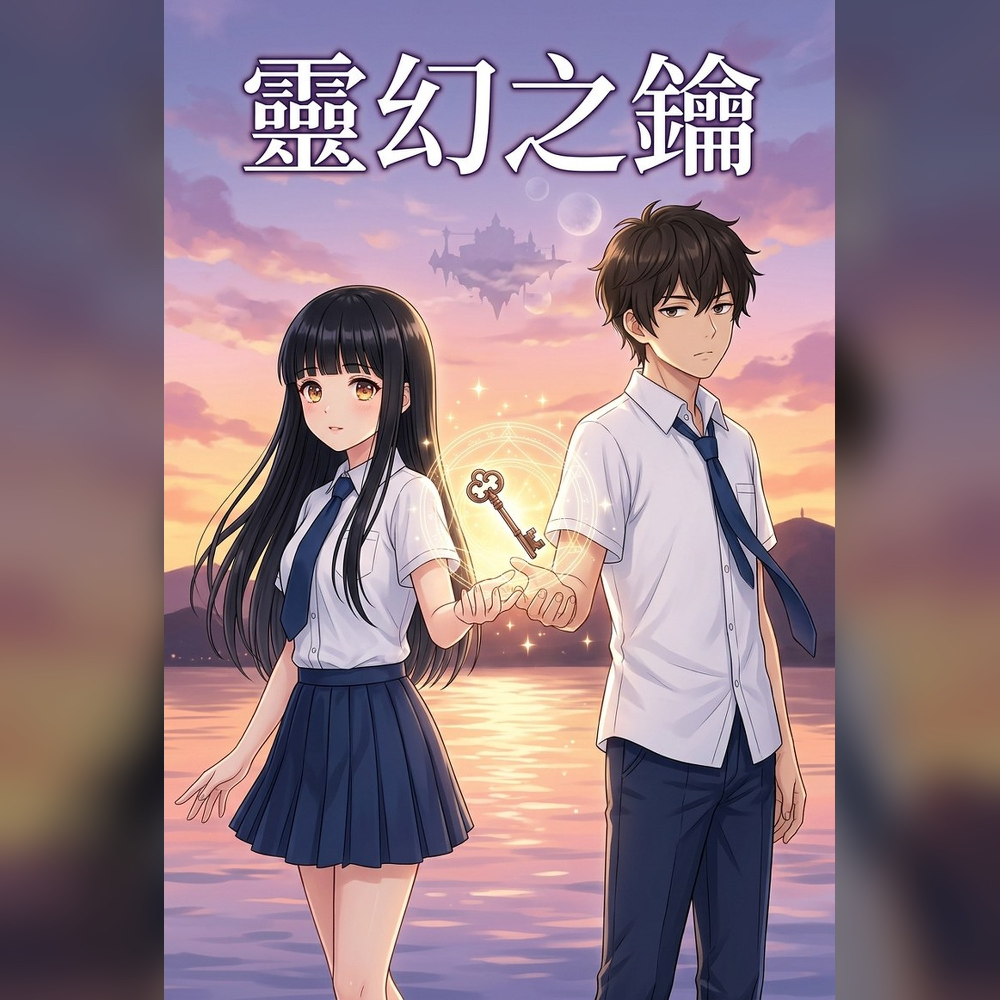

靈幻之鑰｜有聲書
《靈幻之鑰》有聲書。高二開學換座位，我抽到班花沈芷瑜的隔壁。舊圖書館大掃除那天，我們的手同時碰到一把古銅色的鑰匙——醒來時，頭頂有三個月亮。台灣高中校園 × 青春戀愛 × 異世界冒險：淡水的夕陽、劍與魔法、三十公尺的距離。
RSS：https://ntcloudy.github.io/linghuan-podcast/feed.xml
- 靈幻之鑰｜第一章 你迷路了嗎？
- 靈幻之鑰｜第二章 舊圖書館的鑰匙
- 靈幻之鑰｜第三章 三個月亮與史萊姆
- 靈幻之鑰｜第四章 三十公尺的詛咒
- 靈幻之鑰｜第五章 一個當鎖匠，一個當小偷
- 靈幻之鑰｜第六章 萬里長城與草莓布丁
- 靈幻之鑰｜第七章 零點五秒
- 靈幻之鑰｜第八章 便當與大石頭
- 靈幻之鑰｜第九章 第一扉
- 靈幻之鑰｜第十章 只過了一分鐘
- 靈幻之鑰｜第十一章 你家有空房間嗎？
- 靈幻之鑰｜第十二章 異世界歸來者識別定律
- 靈幻之鑰｜第十三章 淡水的風很大
- 靈幻之鑰｜第十四章 咻，然後啪
- 靈幻之鑰｜第十五章 青梅竹馬
- 靈幻之鑰｜第十六章 第七天
- 靈幻之鑰｜第十七章 噴水池的意外
- 靈幻之鑰｜第十八章 以身相許
- 靈幻之鑰｜第十九章 不討厭
- 靈幻之鑰｜第二十章 第二扉
- 靈幻之鑰｜第二十一章 颱風夜
- 靈幻之鑰｜第二十二章 攻略作戰
- 靈幻之鑰｜第二十三章 人類的女婿
- 靈幻之鑰｜第二十四章 月光祭
- 靈幻之鑰｜第二十五章 守門人在等
- 靈幻之鑰｜第二十六章 三十一公尺
- 靈幻之鑰｜第二十七章 天亮前回來
- 靈幻之鑰｜第二十八章 可以叫你的名字嗎
- 靈幻之鑰｜第二十九章 神木之心
- 靈幻之鑰｜第三十章 戀人的護身符